Địa chỉ: Số 1 Đại Cồ Việt, Hai Bà Trưng, Hà Nội
Trường gần trung tâm, các khu vui chơi, gần NEU có các bạn nữ xinh xắn,…
 Vị trí trường ĐH Bách Khoa trên google map (Nguồn: http://ts.hust.edu.vn)
Vị trí trường ĐH Bách Khoa trên google map (Nguồn: http://ts.hust.edu.vn)
Tổng quan về khuôn viên trường
Khuôn viên trường có tổng diện tích 26 ha (lớn nhất trong các trường đại học khu vực nội thành Hà Nội)
Trường có hàng chục tòa nhà cao tầng xen kẽ giữa những hàng cây trên tổng diện tích sử dụng hơn 200000 m2. Trường được ví như một cái mê cung chính hiệu giữa lòng Hà Nội, chờ tới khi đường sắt Cát Linh đi vào vận hành cũng chưa tìm thấy lối ra.
Bách Khoa có 4 cổng trường, với 2 con phố, 5 đường bao quanh.
+ 5 con đường bao quanh Bách Khoa:
- Đại Cồ Việt
- Trần Đại Nghĩa
- Tạ Quang Bửu
- Giải Phóng
- Lê Thanh Nghị
+ Đại học Bách Khoa bao gồm có 4 cổng ra vào:
- Cổng Parabol huyền thoại (đầu đường Giải Phóng)
- Cổng ra vào nằm ở đường Đại Cồ Việt
- Cổng Trần Đại Nghĩa
- Cổng dẫn vào ký túc xá
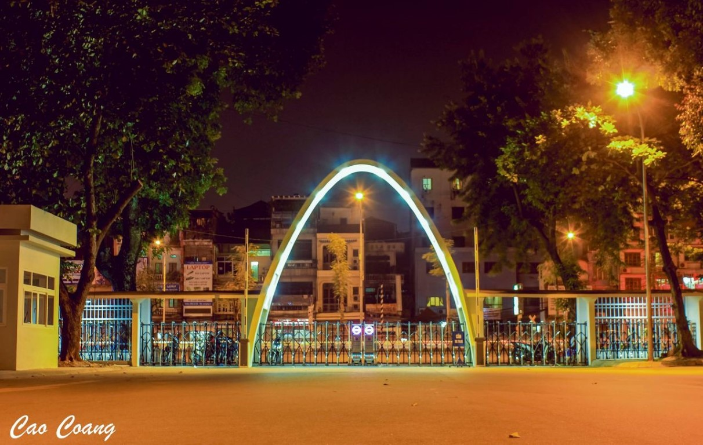 Cổng Parabol (Nguồn: liberzy.com)
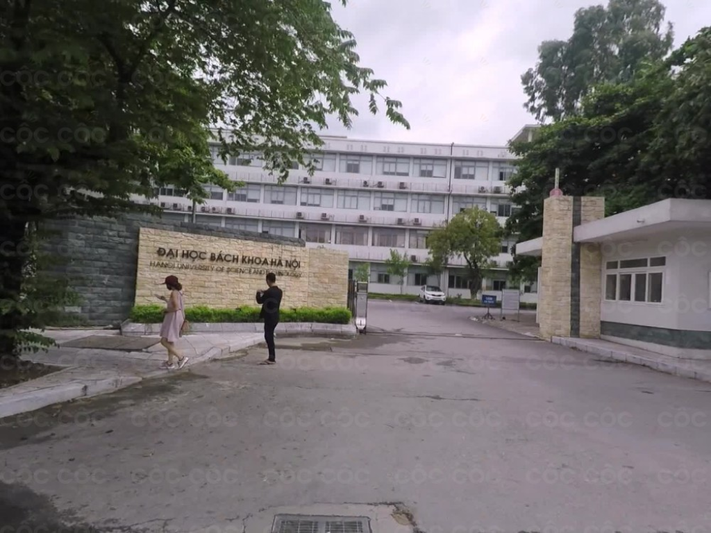 Cổng Đại Cồ Việt (Nguồn: map.coccoc.com)
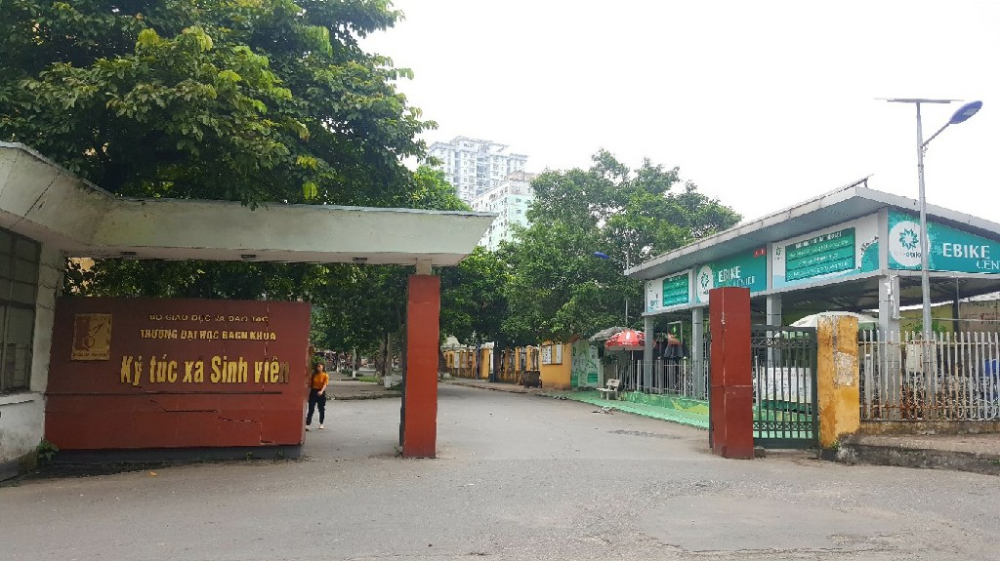 Cổng KTX đại học Bách Khoa (Nguồn: map.coccoc.com)
Thông tin về các tòa nhà
Nhà C1: là một trong những công trình trọng điểm trong tổng thể kiến trúc của trường. Nay nhà C1 được sử dụng làm trung tâm văn phòng và quản trị của toàn bộ nhà trường.
Gồm các phòng: Phòng Công tác Sinh viên, phòng Đào tạo, phòng Cơ sở vật chất, phòng Hành chính tổng hợp,…
Tòa nhà C2: Văn phòng Đoàn Thanh niên, văn phòng Đảng ủy,…
Trường Đại học Bách Khoa Hà Nội gồm 14 viện, nằm chủ yếu từ C4 – C10:
- Nhà C4: Viện Kỹ thuật Hóa học, viện CN Sinh học và CN thực phẩm.
- Nhà C5: Viện Khoa học và Kỹ thuật vật liệu, viện Dệt may – Da giầy và Thời trang.
- Nhà C6 - C8: Hiện đang được phá dỡ và tu sửa.
- Nhà C9: Viện Vật lý kỹ thuật, viện Cơ khí, viện Khoa học và Công nghệ Môi trường.
- Nhà B1: Viện Công nghệ Thông tin và Truyền thông.
- Nhà D3: Viện Toán ứng dụng và Tin học.
- Nhà D4: Viện ngoại ngữ..
 Tòa nhà B1 đại học Bách Khoa (Nguồn: liberzy.com)
Tòa nhà B1 đại học Bách Khoa (Nguồn: liberzy.com)
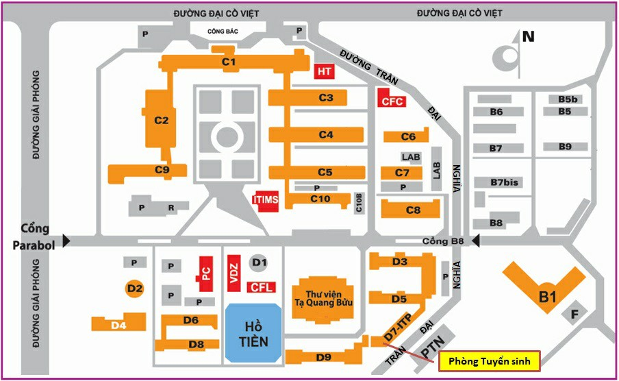 Bản đồ đại học Bách Khoa (Nguồn: ts.hust.edu.vn)
Thư viện Tạ Quang Bửu
Thư viện của Bách Khoa được thành lập năm 1956 với cái tên Tạ Quang Bửu là một trong những thư viện lớn nhất Việt Nam.
Thư viện thiết kế với 10 tầng, tổng diện tích 37000m2, có thể phục vụ đồng thời 2000 sinh viên với 600000 cuốn sách, 130000 đầu sách điện tử. Sinh viên được truy cập miễn phí CSDL từ các nguồn như Sciencedirect, Scopus…
Thư viện Tạ Quang Bửu có hội đồng lớn hiện đại với sức chứa hàng nghìn người, nhiều phòng lab để nghiên cứu, phòng học rộng thênh thang, yên tĩnh để sinh viên có thể học bài một cách yên tĩnh.
Thư viện cũng được trang bị 2 phòng multimedia với các máy tính PC cấu hình hiện đại nhằm phục vụ sinh viên truy cập Internet, khai thác các tài nguyên, học liệu trên mạng phục vụ cho việc học.
Không chỉ là nơi để sinh viên tự học, tra cứu, đây cũng là nơi đặt trụ sở của nhiều đơn vị quan trong, như Viện Nghiên cứu cao cấp về Toán, Hội đồng Chức danh Giáo sư Nhà nước. Có một lưu ý nhỏ là thư viện Tạ Quang Bửu không mở cửa cho người ngoài vào tham quan đâu nhé.
Giảng đường
Đại học Bách Khoa có hơn 200 giảng đường, 400 phòng học, hội trường lớn cùng hệ thống các phòng hội thảo, gần 200 phòng thí nghiệm, trong đó có 12 phòng thí nghiệm trọng điểm và đầu tư tập trung; khoảng 20 xưởng thực tập và thực hành.
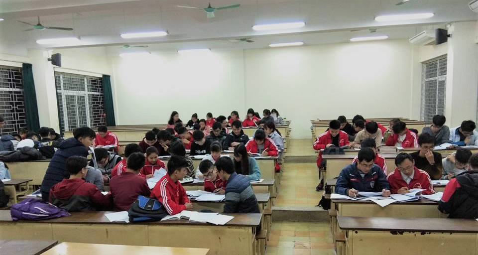 Phòng học đại học Bách Khoa (Nguồn: vnexpress.net)Khu liên hợp thể thao
Khu liên hợp thể thao có diện tích 20000m2 với hệ thống cơ sở vật chất hiện địa, bao gồm: sân bóng, bể bơi, sân tennis tiêu chuẩn quốc gia và nhà thi đấu đa năng tiêu chuẩn Đông Nam Á.
Sân bóng cỏ nhân tạo Bách Khoa khá chuyên nghiệp với khán đài bao quanh. Sân bao gồm 4 sân 7 đạt kích thước tiêu chuẩn của FIFA, hệ thống chiếu sáng tốt, mặt sân đẹp. Có đầy đủ dịch vụ thuê đồ và nước uống. Bên cạnh đó còn có rất nhiều dịch vụ khác:
- Dịch vụ cho thuê và bán trang phục cầu thủ, giày thể thao
- Dịch vụ gửi xe máy, ô tô khép kín
- Dịch vụ y tế
- Khu vệ sinh, thay đồ
Trung tâm Y tế
Trung tâm Y tế hoạt động theo mô hình phòng khám đa khoa chăm sóc sức khỏe thường xuyên cho các cán bộ và sinh viên Trường.
Quy trình, thủ tục khi đi khám: Sinh viên mang theo thẻ BHYT và thẻ sinh viên, mua sổ khám bệnh (đối với lần khám đầu tiên), được thực hiện các thủ tục khám bệnh, xét nghiệm, được cấp thuốc theo chế độ hiện hành.
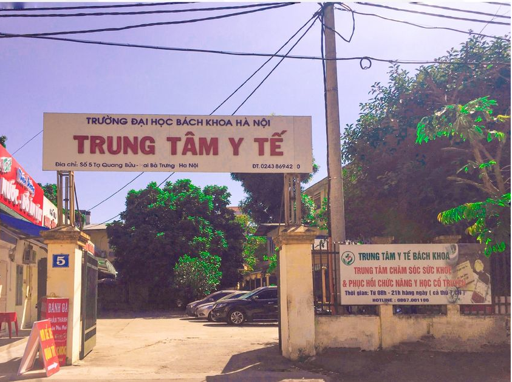 Trung tâm y tế đại học Bách Khoa (Nguồn fb: Hỗ trợ Sinh viên Bách Khoa)Địa điểm sống ảo ở Bách Khoa
- CHỮ HUST trước Thư viện Tạ Quang Bửu
- TƯỜNG LƯỚI ĐIỆN C8
- NHÀ NẤM
- HỒ TIỀN
- CON ĐƯỜNG TÌNH YÊU
- CẦU THANG C9
Đây là biểu tượng mới của HUST được đặt trước Thư viện Tạ Quang Bửu vào đầu năm nay. Dòng chữ đỏ cộng thêm một nụ cười xinh là đã làm nên một bộ ảnh “đặc sản” trường H nhé!
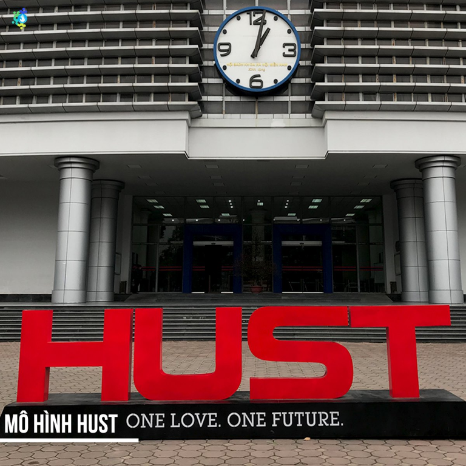 Phía trước của thư viên Tạ Quang Bửu(Nguồn fb: Hỗ trợ Sinh viên Bách Khoa)Vintage chính là màu sắc chủ đạo khi bạn chụp ảnh tại đây. Chính bởi có tuổi thọ lâu đời mà tường lưới điện này mang vẻ đẹp cổ kính phong rêu. Nếu là tín đồ của màu film, đừng bỏ lỡ siêu phẩm này.
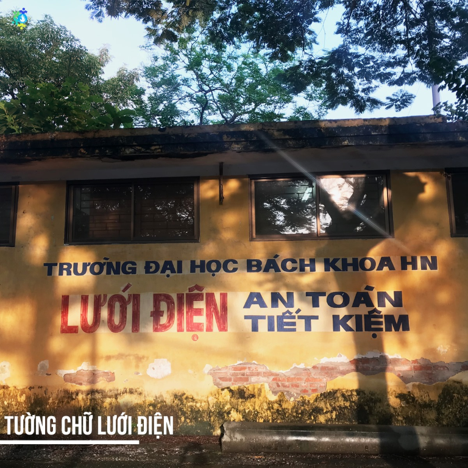 Tường lưới điện C8 đại học Bách Khoa(Nguồn fb: Hỗ trợ Sinh viên Bách Khoa)Check-in trường H mà bỏ qua địa điểm này thì hẳn là một thiếu sót lớn. Nhà Nấm tuy chỉ mới hoạt động trở lại cách đây không lâu nhưng thu hút rất nhiều photographers và những người đam mê sống ảo.
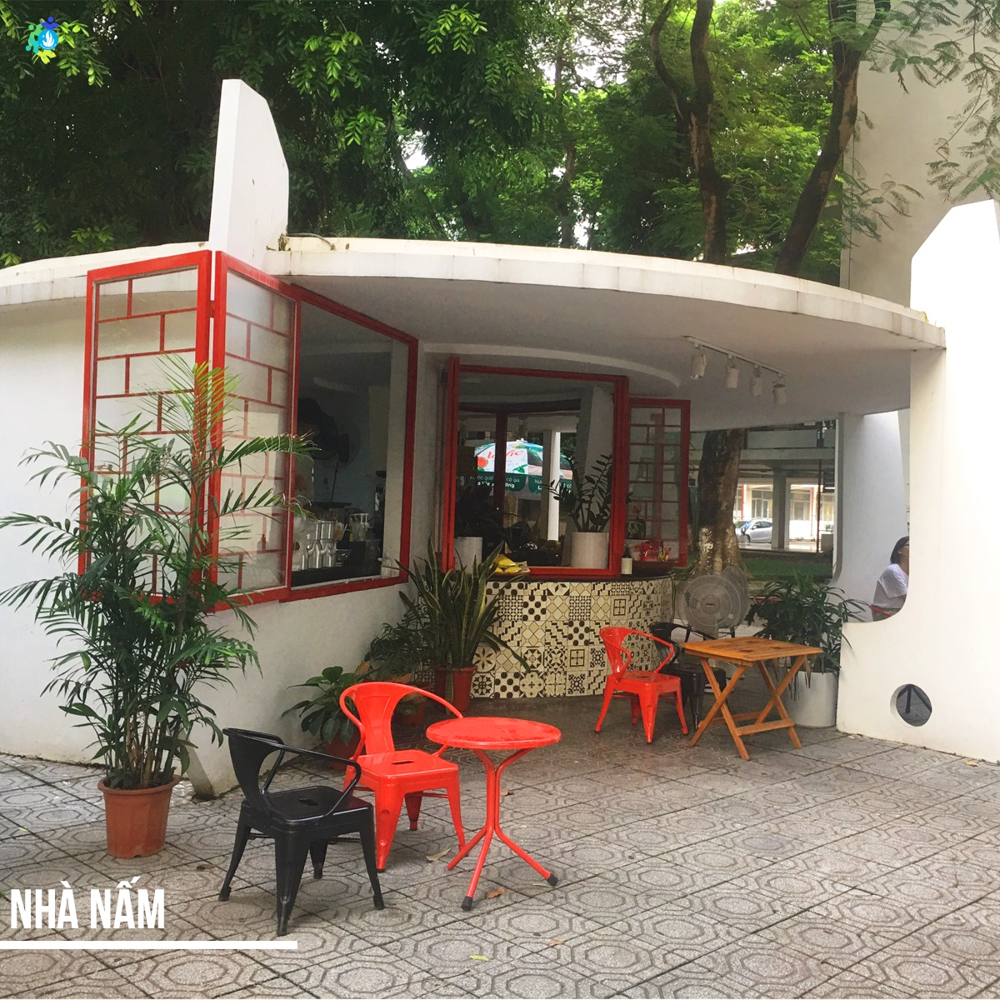 Nhà nấm đại học Bách Khoa(Nguồn fb: Hỗ trợ Sinh viên Bách Khoa)Hồ “Tiền” nhưng đừng lầm tưởng dưới hồ có “tiền” nhé. Sau quá trình tu sửa, hiện nay hồ Tiền đã và đang khoác lên mình bộ mặt mới, thích hợp để đến đây check-in một bộ ảnh với hoa súng cực kỳ lung linh.
Bật mí cho ai chưa biết về sự tích tung đồng xu xuống hồ và cầu nguyện thì sẽ có người yêu - sự tích Hồ Tiền được lưu truyền tại Bách Khoa qua các khóa.
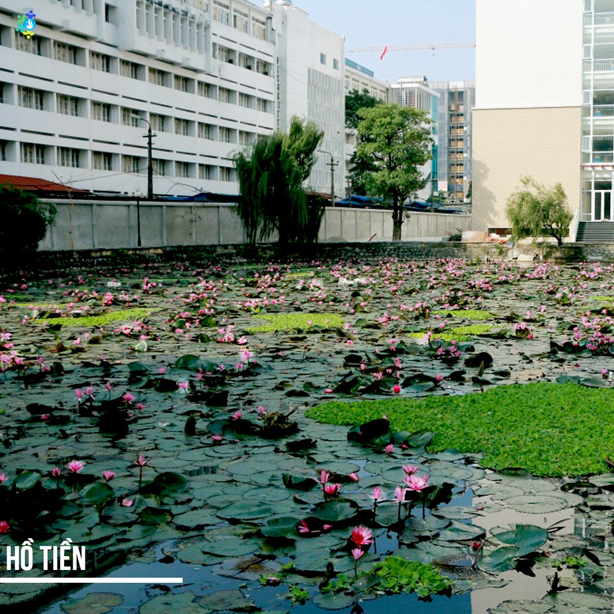 Hồ tiền tại đại học Bách Khoa(Nguồn fb: Hỗ trợ Sinh viên Bách Khoa)Đúng như tên gọi của nó, đây là nơi các đôi nam thanh nữ tú trường Bách thường xuyên chọn làm địa điểm sống ảo bậc nhất. Hãy tưởng tượng khi Hà Nội vào thu, lá vàng rơi đầy đường, con đường tình yêu sẽ cuốn hút nhường nào
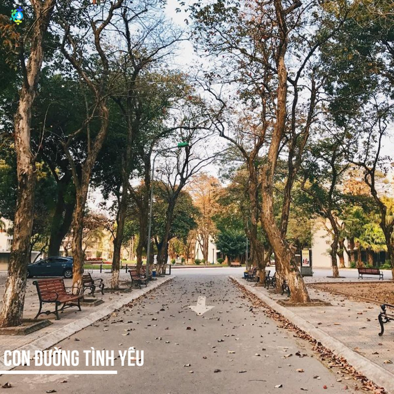 Con đường tình yêu tại đại học Bách Khoa(Nguồn fb: Hỗ trợ Sinh viên Bách Khoa)Với tone màu trắng chủ đạo kết hợp với sắc đỏ của lan can cầu thang, cầu thang C9 đem đến vẻ riêng biệt so với các trường đại học khác. Dù là địa điểm có vẻ không mấy đặc sắc, nhưng đây lại là “nấc thang lý tưởng” mà các Sắn đặc biệt lưu tâm trong bộ ảnh của mình.
 Cầu thang C9 tại đại học Bách Khoa(Nguồn fb: Hỗ trợ Sinh viên Bách Khoa)
Cầu thang C9 tại đại học Bách Khoa(Nguồn fb: Hỗ trợ Sinh viên Bách Khoa)
Đăng bởi Ngoc Duc
tham khảo thông tin từ
Đại học Bách Khoa,
Hỗ Trợ Sinh Viên Bách Khoa,
Vnexpress,
Liberzy
.